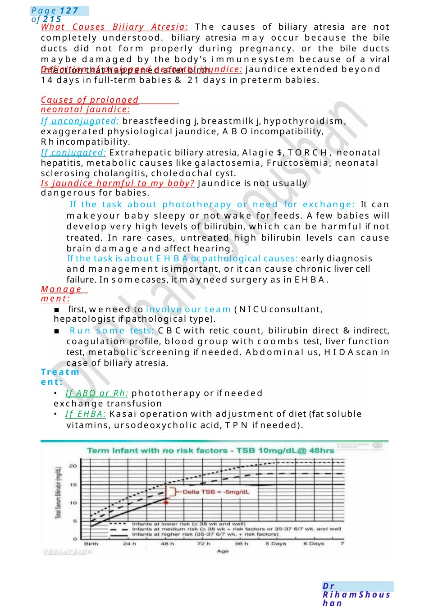
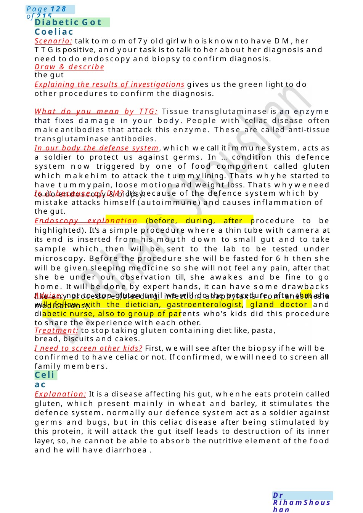

Diabetic Got Coeliac
What Causes Biliary Atresia: The causes of biliary atresia are not completely understood. biliary atresia may occur because the bile ducts did not form properly during pregnancy. or the bile ducts maybe damaged by the body's immunesystem because of a viral infection that happened after birth. Definition of prolonged neonatal jaundice: jaundice extended beyond 14 days in full-term babies & 21 days in preterm babies.
Scenario Summary
What Causes Biliary Atresia: The causes of biliary atresia are not completely understood. biliary atresia may occur because the bile ducts did not form properly during pregnancy. or the bile ducts maybe damaged by the body's immunesystem because of a viral infection that happened after birth. Definition of prolonged neonatal jaundice: jaundice extended beyond 14 days in full-term babies & 21 days in preterm babies.
Full Original Scenario

What Causes Biliary Atresia: The causes of biliary atresia are not completely understood. biliary atresia may occur because the bile ducts did not form properly during pregnancy. or the bile ducts maybe damaged by the body's immunesystem because of a viral infection that happened after birth.
Definition of prolonged neonatal jaundice: jaundice extended beyond 14 days in full-term babies & 21 days in preterm babies.
Causes of prolonged neonatal jaundice:
If unconjugated: breastfeeding j, breastmilk j, hypothyroidism, exaggerated physiological jaundice, ABOincompatibility, Rhincompatibility.
If conjugated: Extrahepatic biliary atresia, Alagie $, TORCH, neonatal hepatitis, metabolic causes like galactosemia, Fructosemia, neonatal sclerosing cholangitis, choledochal cyst.
Is jaundice harmful to my baby? Jaundice is not usually dangerous for babies.
If the task about phototherapy or need for exchange: It can makeyour baby sleepy or not wake for feeds. Afew babies will develop very high levels of bilirubin, which can be harmful if not treated. In rare cases, untreated high bilirubin levels can cause brain damage and affect hearing.
If the task is about EHBAor pathological causes: early diagnosis and management is important, or it can cause chronic liver cell failure. In somecases, it mayneed surgery as in EHBA.
Management:
▪ first, weneed to involve our team (NICUconsultant, hepatologist if pathological type).
▪ Run some tests: CBCwith retic count, bilirubin direct &indirect, coagulation profile, blood group with coombs test, liver function test, metabolic screening if needed. Abdominal us, HIDAscan in case of biliary atresia.
Treatment:
- If ABO or Rh: phototherapy or if needed exchange transfusion
- If EHBA: Kasai operation with adjustment of diet (fat soluble vitamins, ursodeoxycholic acid, TPN if needed).

Diabetic Got Coeliac
Celiac
Scenario: talk to momof 7y old girl whois knownto have DM,her TTGis positive, and your task is to talk to her about her diagnosis and need to do endoscopy and biopsy to confirm diagnosis.
Draw & describe the gut
Explaining the results of investigations gives us the green light to do other procedures to confirm the diagnosis.
What do you mean by TTG: Tissue transglutaminase is an enzyme that fixes damage in your body. People with celiac disease often makeantibodies that attack this enzyme. These are called anti-tissue transglutaminase antibodies.
In our body the defense system, which wecall it immunesystem, acts as a soldier to protect us against germs. In ... condition this defence system now triggered by one of food component called gluten which makehim to attack the tummylining. Thats whyhe started to have tummypain, loose motion and weight loss. Thats whyweneed to do endoscopy &biopsy.
Is it because of DM? It's because of the defence system which by mistake attacks himself (autoimmune) and causes inflammation of the gut.
Endoscopy explanation (before, during, after procedure to be highlighted). It's a simple procedure where a thin tube with camera at its end is inserted from his mouth down to small gut and to take sample which then will be sent to the lab to be tested under microscopy. Before the procedure she will be fasted for 6 h then she will be given sleeping medicine so she will not feel any pain, after that she be under our observation till, she awakes and be fine to go home. It will be done by expert hands, it can have some drawbacks like any procedure (bleeding, infection, anaphylaxis from anesthesia medications).
Advice: not to stop gluten until we will do the procedure, after that she will follow with the dietician, gastroenterologist, gland doctor and diabetic nurse, also to group of parents who's kids did this procedure to share the experience with each other.
Treatment: to stop taking gluten containing diet like, pasta, bread, biscuits and cakes.
I need to screen other kids? First, wewill see after the biopsy if he will be confirmed to have celiac or not. If confirmed, wewill need to screen all family members.
Explanation: It is a disease affecting his gut, whenhe eats protein called gluten, which present mainly in wheat and barley, it stimulates the defence system. normally our defence system act as a soldier against germs and bugs, but in this celiac disease after being stimulated by this protein, it will attack the gut itself leads to destruction of its inner layer, so, he cannot be able to absorb the nutritive element of the food and he will have diarrhoea .